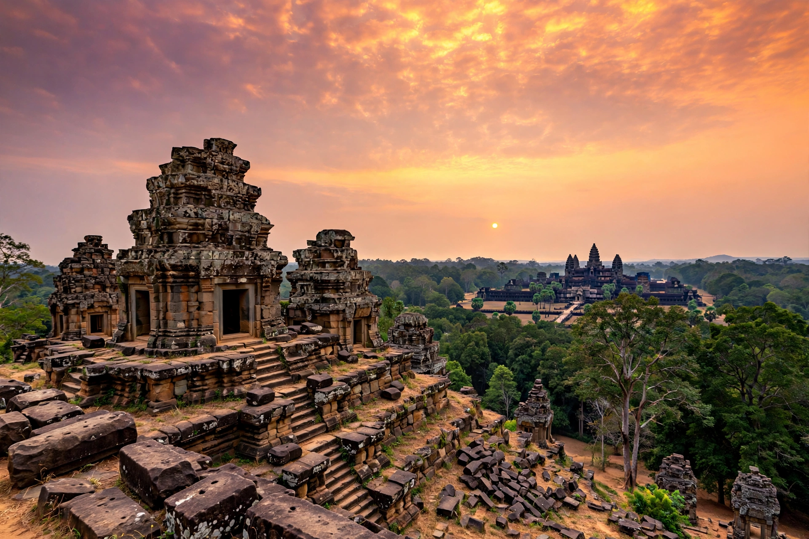

Phnom Bakheng is a Hindu temple in the form of a temple mountain at Angkor, Cambodia, dedicated to Shiva. Built in the late 9th to early 10th century during the reign of King Yasovarman I (889–910), it stood at the centre of the new capital Yasodharapura, on a hill between Angkor Wat and Angkor Thom.

| Location | Angkor, Siem Reap, Cambodia |
|---|---|
| Built | Late 9th–early 10th c. |
| Deity | Shiva |
| Creator | Yasovarman I |
The pyramid has seven levels representing heavens, originally with 108 small towers (a sacred number) around its base and terraces — 109 including the central sanctuary, symbolising the four lunar phases over 27 days and Mount Meru cosmology. The temple offers panoramic sunset views over Angkor Wat and Tonlé Sap, making it a heavily visited site subject to conservation limits.